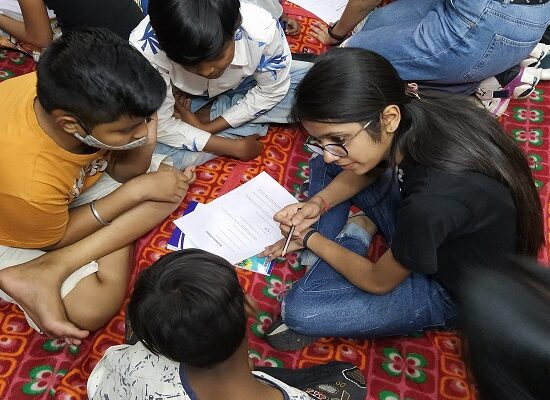

Section 8 Non-Profit · Bilaspur, Chhattisgarh
InAmigos Foundation works towards building an inclusive, compassionate, and empowered society through collective action.
InAmigos Foundation was founded on September 23, 2020 by Mr. Govind Shukla. It is a Section 8 registered non-profit organisation based in Chhattisgarh, dedicated to creating lasting social impact across India.
The foundation runs purpose-driven projects focused on education, food distribution, women empowerment, animal welfare, environmental sustainability, social inclusion, and skill development — touching lives across 28 states with the support of a growing volunteer network.
Each project addresses a specific social need and creates measurable, lasting impact in communities across India.
Providing food and clothing support to underprivileged communities, ensuring no one goes without basic necessities.
Supporting quality education for underprivileged children, giving every child a chance to learn and grow.
Animal welfare through rescue, protection, and feeding — because compassion extends to all living beings.
Women empowerment through skill development and financial independence, helping women build self-reliant futures.
Environmental conservation and sustainability efforts to protect our planet for future generations.
Employability and skill development programs bridging the gap between youth potential and economic opportunity.
Glimpses of the work being done on the ground — for the community, by the community.



Join hands with InAmigos Foundation to support communities, protect the environment, empower women, and create meaningful social impact.